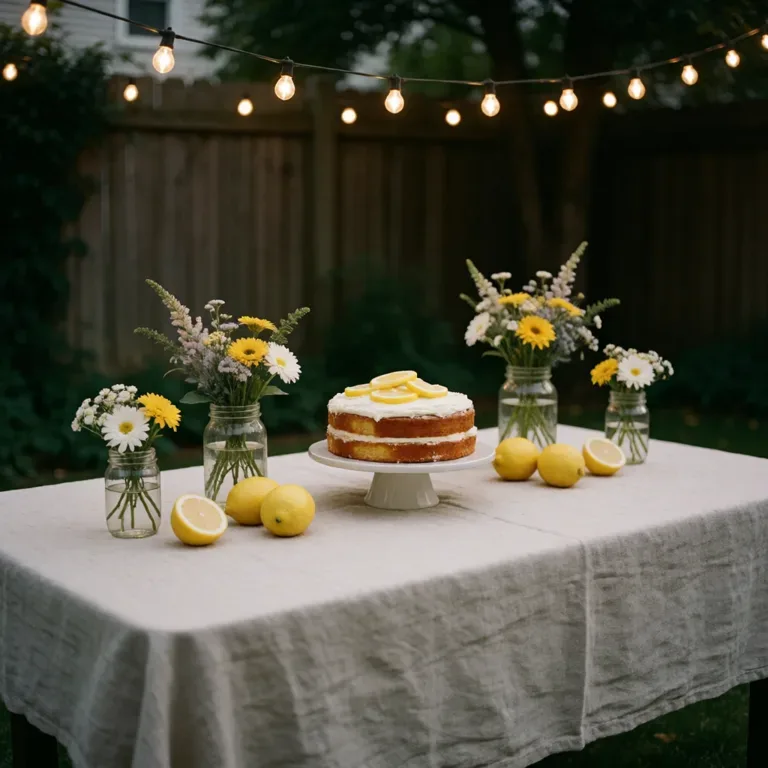
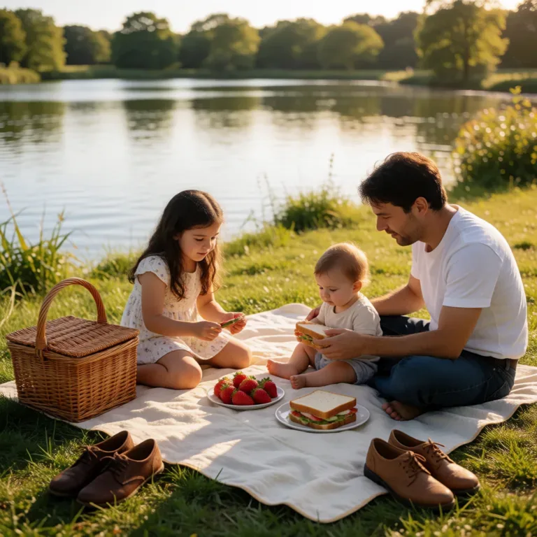
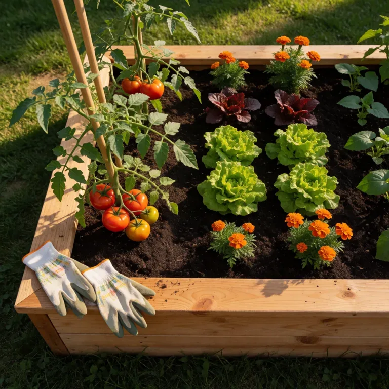
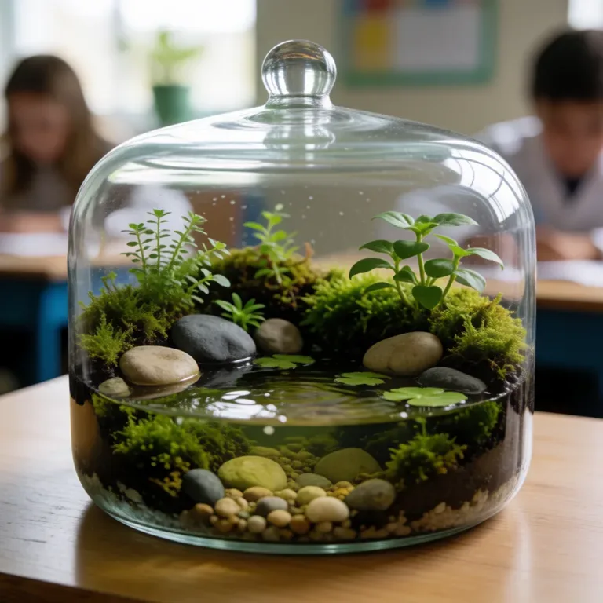
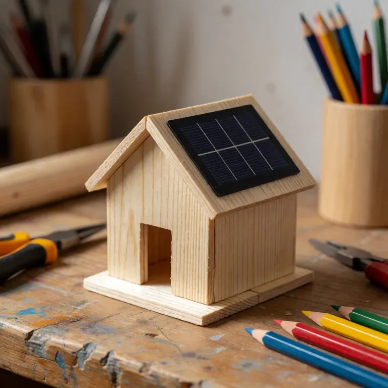

On Saturday we will take the train to the coast, walk by the harbor, and have a picnic.
Library
Everything made through your gateway.
Sam
You
A lived-in family kitchen in warm morning light, sourdough bread on a wooden board, yellow ceramic mug, herbs at the window. Candid editorial photograph, tasteful natural colors, no text.

A coastal walking trail with wildflowers, two bicycles leaned against a wooden fence, blue sea and distant fishing boats, sunny family weekend mood, natural travel photography.

A homemade apple tart cooling on a wooden kitchen table, flour-dusted rolling pin, folded linen towel and a bowl of autumn apples, gentle window light, food photography.

A small wood cabin beside a mountain lake at sunrise, mist above still water, canoe pulled onto a pebble shore, peaceful family holiday scene, travel photograph.

A simple backyard birthday table with a homemade lemon cake, linen tablecloth, flowers in jam jars and warm string lights, intimate family celebration, no people no text, editorial photograph.

A family picnic blanket beside a quiet lake, wicker basket, strawberries and sandwiches, shoes placed neatly on grass, golden afternoon light, candid travel photograph.
Hi June. Welcome to our household gateway. You can try a voice message or make a picture of your garden.
Robin


An overhead photograph of a backyard raised vegetable bed with tomatoes, lettuce and marigolds, gardening gloves on the cedar edge, late afternoon sunlight, warm documentary style.

A golden retriever asleep beside a sunlit living room window, knitted cream blanket and houseplants, quiet ordinary family afternoon, candid photography.

A cozy reading corner with a green armchair, well-loved paperback, tea and a patchwork quilt, rain on the window, warm lamp light, tasteful interior photography.

A ginger cat peeking from a bookshelf between paperbacks and a ceramic vase, lived-in family living room, soft afternoon light, candid photograph.

Basil rosemary and thyme growing in terracotta pots on a kitchen windowsill, old brass watering can, morning sun and soft shadows, honest domestic photograph.

View from a train window over rolling countryside in autumn, a travel journal and two takeaway coffee cups on the small table, warm quiet family travel photograph.

Rain drops on a small covered patio with terracotta planters, a folded green umbrella and two wooden chairs, warm light through a kitchen door, cozy documentary photograph.

A backyard vegetable garden at dusk with a stone path, climbing beans and warm porch lights, the first stars above, peaceful lived-in home photography.
The tomatoes are ready to pick. Please water the herb pots before dinner.
For the apple tart, slice the apples thinly and bake until the pastry is golden. Let it cool before serving.
A gentle breeze moves the leaves in a sunlit backyard vegetable garden, a watering can beside the raised bed, quiet warm family afternoon, slow steady camera. Audio: birds chirping softly.
Alex


A beautifully crafted school science project showing a miniature pond ecosystem in a glass terrarium with moss, stones and tiny plants on a classroom desk. Editorial photograph, no text.


A tiny handmade solar-powered model house made of balsa wood with a small solar panel on the roof on a teenager workbench, tools and colored pencils, detailed natural photography.

A hand-painted watercolor study of local wildflowers on a sketchbook page, paint palette and brushes on a teenager desk, warm natural light, charming believable craft photograph, no lettering.

A handmade wooden birdhouse freshly painted soft blue hanging from an apple tree in a backyard, a small bird nearby, spring sunlight, thoughtful school craft project photograph.
Our solar house uses sunlight to power a tiny fan. We tested it on a cloudy day too.
No creations match this search.